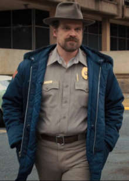

Jim Hopper (portrayed by David Harbour), nicknamed "Hop", is the chief of Hawkins Police Department. Hopper has lived in Hawkins nearly all his life, having attended high school with Joyce Byers and Bob Newby. He has also been addressed as "Sheriff Hopper," but this is not a correct title. Hopper divorced after his young daughter Sarah died of cancer, which caused him to lapse into alcoholism. For a few years after Sarah's death, he was a cop in "a big city," but the show never states which city. When he had been in the city long enough, he moved back to Hawkins. Eventually, he grows to be more responsible, saving Will Byers from the Demogorgon as well as taking Eleven in as his adopted daughter. In Season 3, he tries to break up Eleven and Mike since their relationship is moving too fast for him, while simultaneously trying to win over Joyce romantically. Through Joyce, he once again gets involved in an investigation regarding the supernatural, which leads them to uncover a Russian conspiracy. He is apparently killed by an explosion caused by a Russian machine used to open a portal to the Upside Down. At the end of season three during the final credits, a scene shows a Russian prison with two guards selecting a prisoner to give to a demogorgon. As they are talking about who to kill, one of the guards orders "not the American", leading to speculation of Hopper's survival.
